CITLALIHONORÉ
Citlali Honoré fabrique des réseaux. De la laine, du fil de fer, du fusain, des images prises au microscope : elle emprunte au vivant ses formes de ramification et les fait pousser dans l'espace d'exposition.
Née au Mans en 2003, elle sort de l'ESADHaR de Rouen en 2026 avec un DNSEP obtenu avec les félicitations du jury, après quatre mois d'échange à l'école d'art ISI de Yogyakarta, en Indonésie. Sa pratique passe d'un médium à l'autre sans hiérarchie : peinture, gravure au fer électrique, tissage, photo, vidéo et composition sonore.
Ce qui l'intéresse, c'est le moment où la matière lui échappe. Elle part d'une image de science — une coupe au microscope, un réseau de neurones, une colonie de cellules — et la laisse se déformer au contact du hasard. Ses installations sont dites évolutives : elles changent de taille et de forme à chaque accrochage, et déforment la perception qu'on a du lieu où elles sont posées.
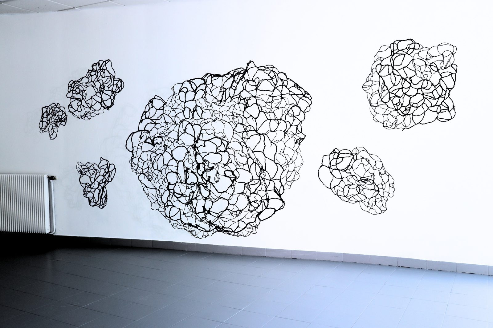
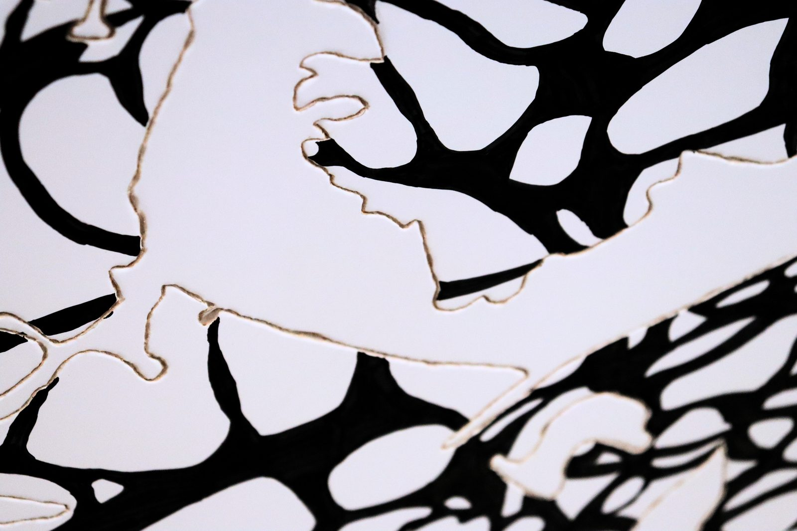
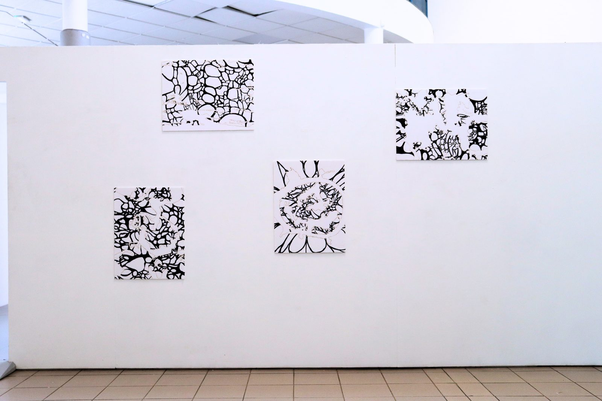
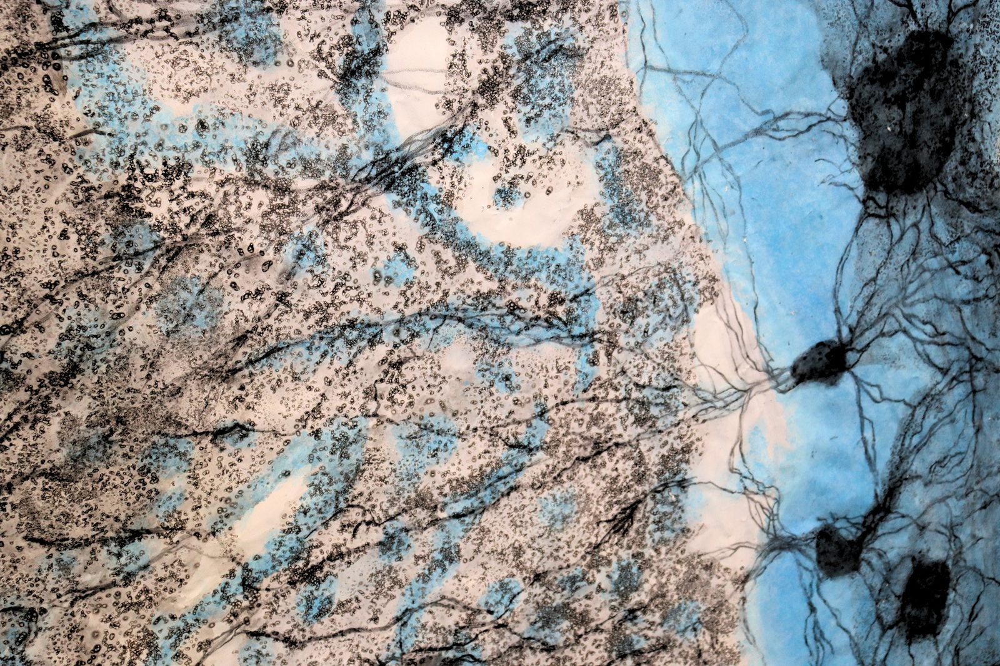
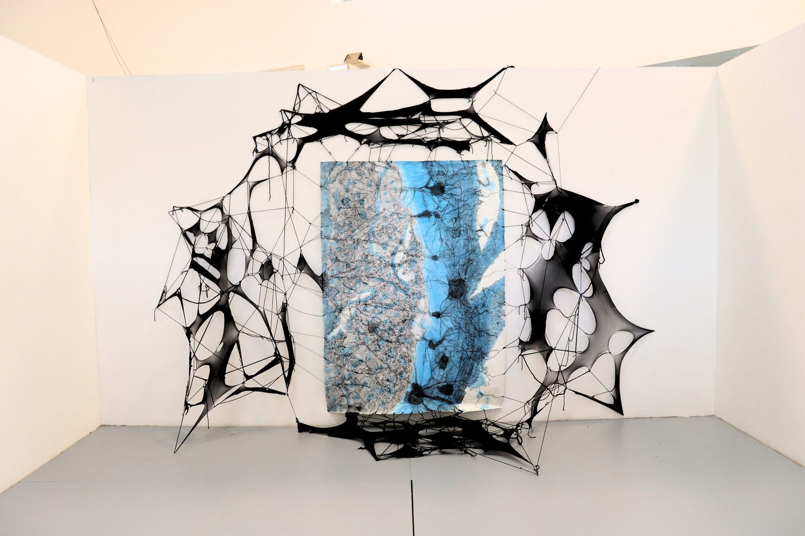
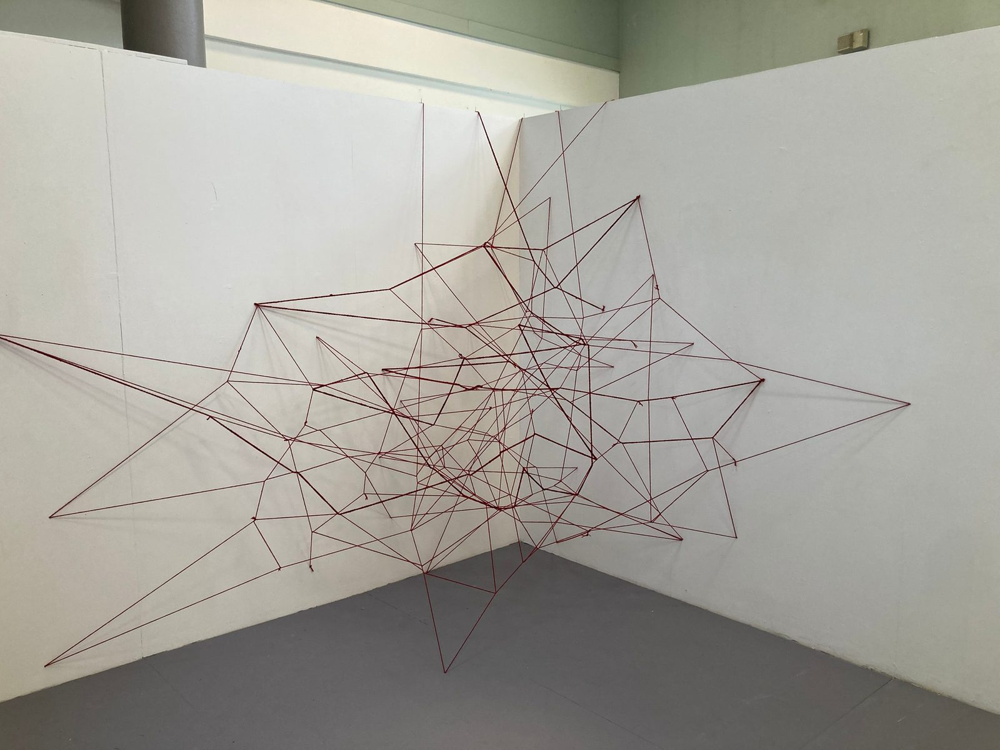
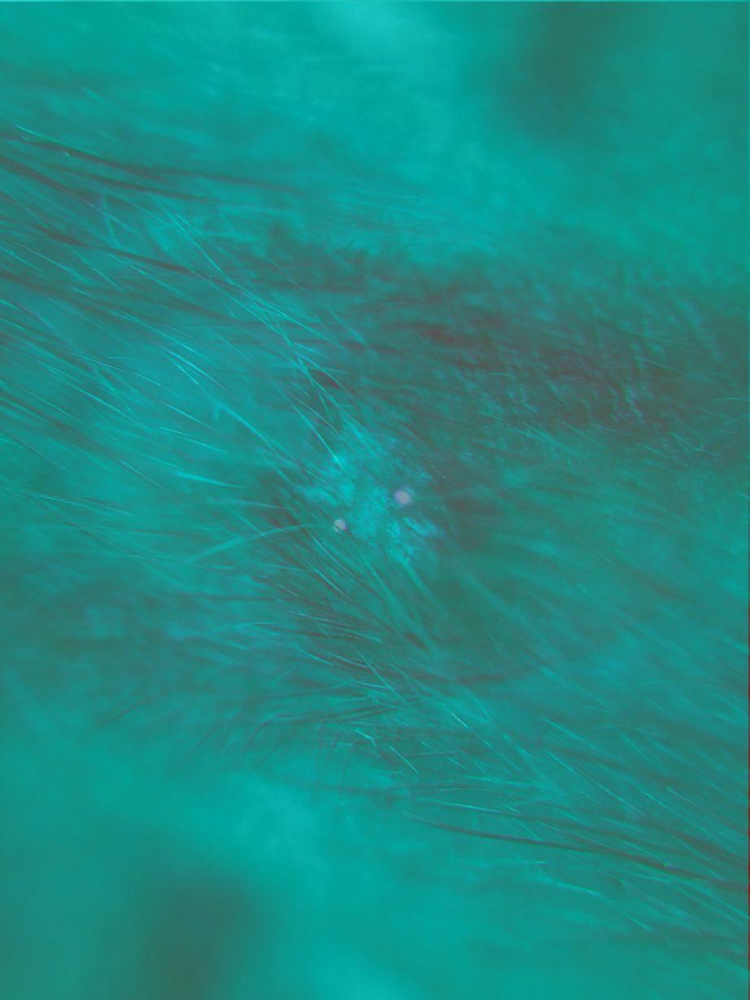
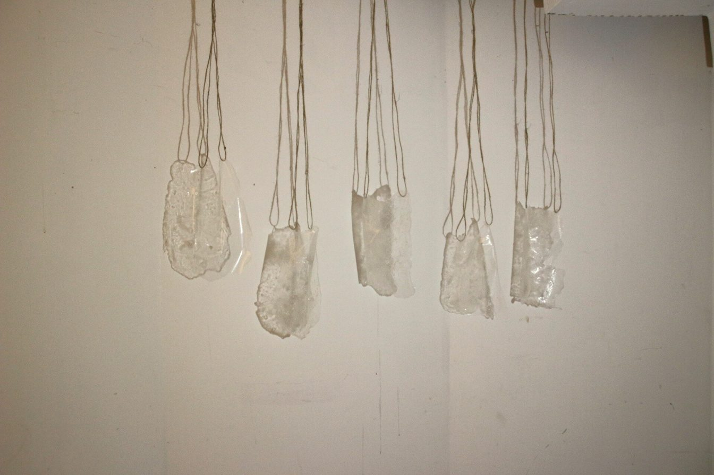
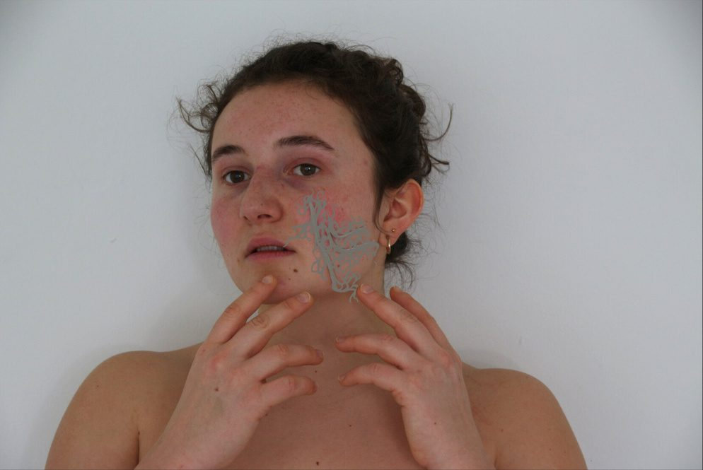
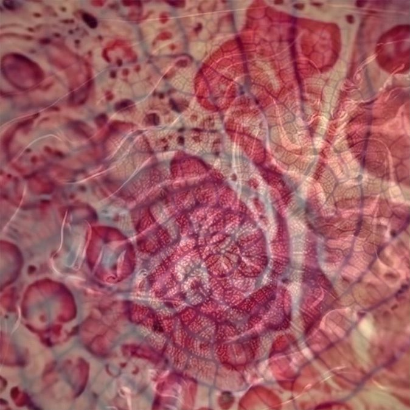
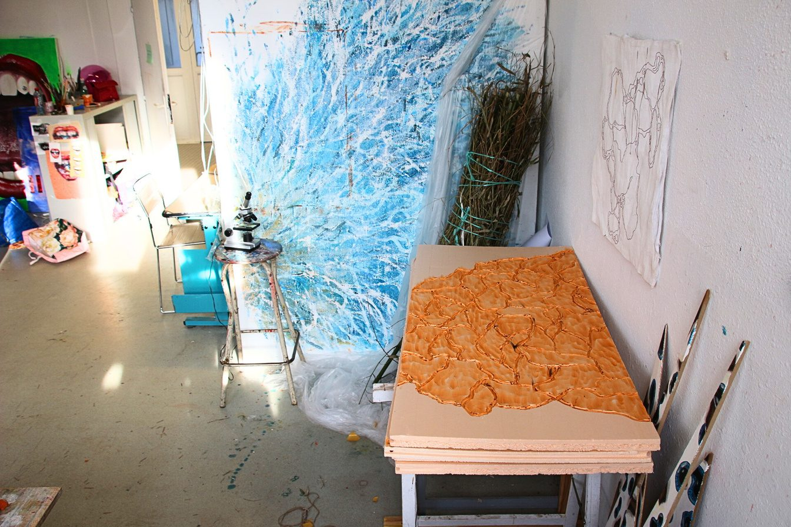
Vidéos
- La Veine — animation image par image, 37 s, 2024
- Carrousel — vidéo diaporama, 4 min 11, 2024
- Chou — collage de vidéos prises au microscope, 1 min 55, 2022
Mémoire : Massalumen fracticorrosivum, étude fictive d'un spécimen qui l'est tout autant, 2025-2026.